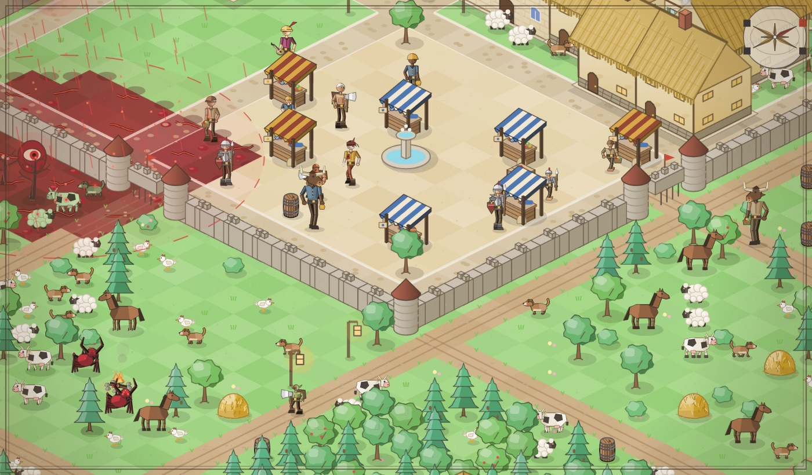
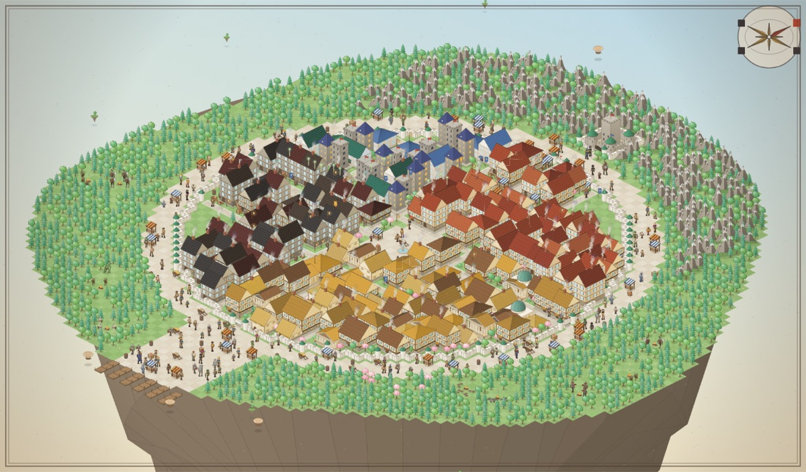
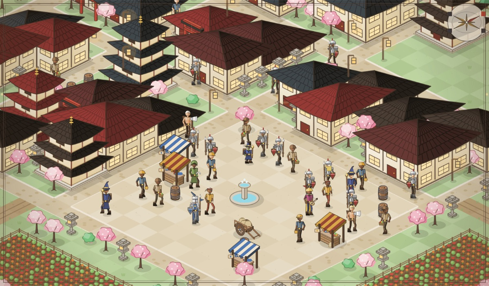
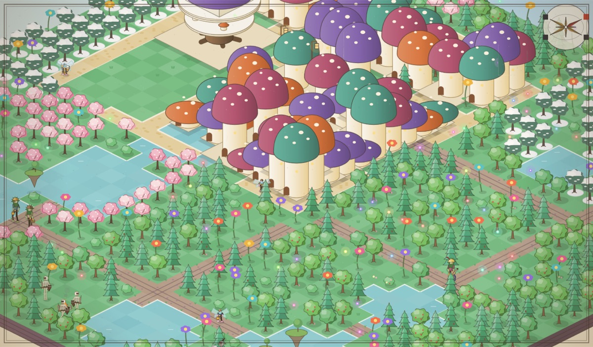
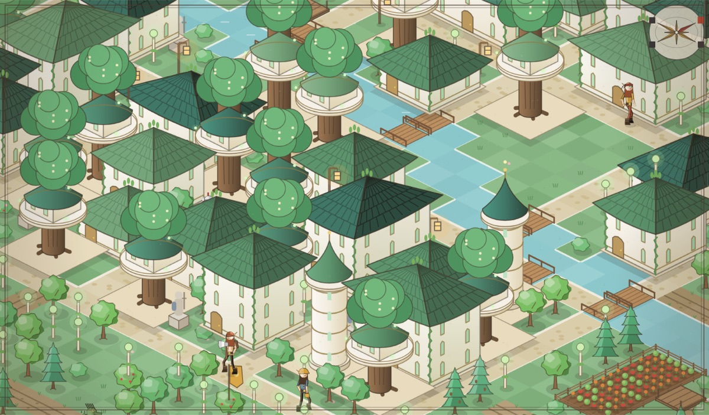
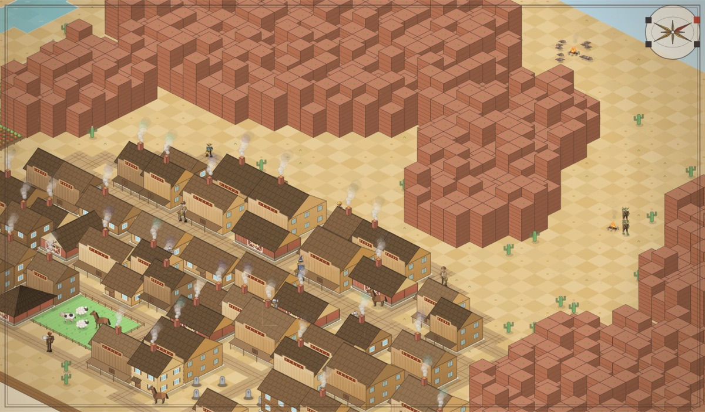
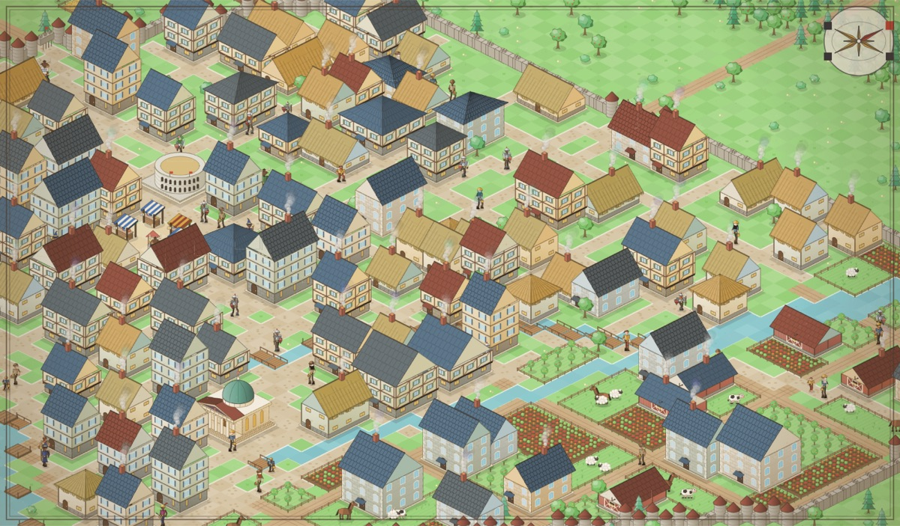
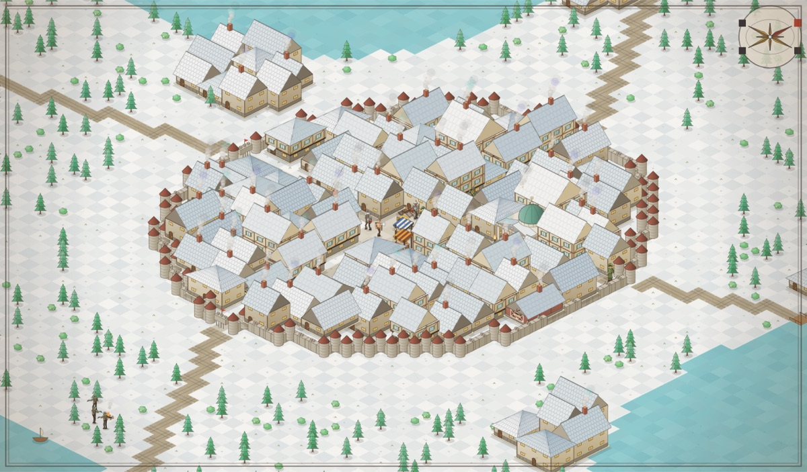
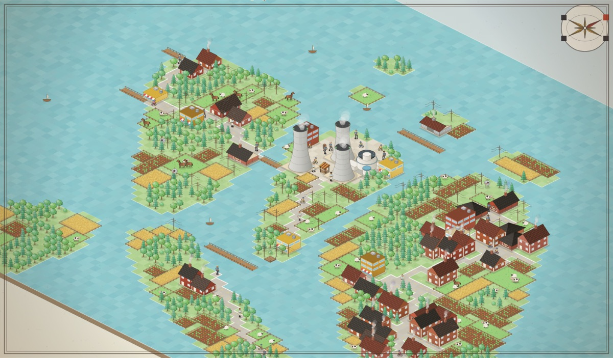
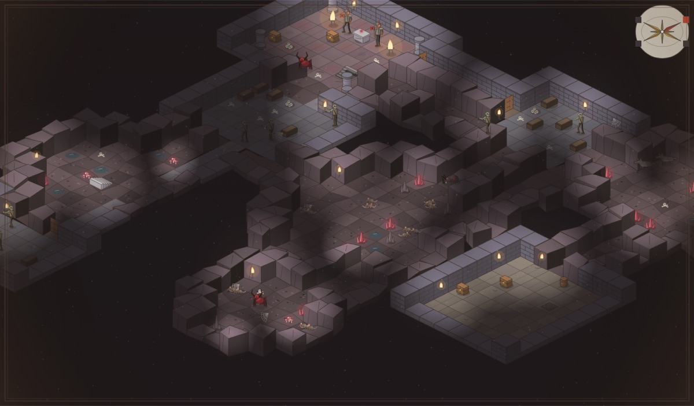

Gerador de cidades e masmorras para RPG
O Burgo cria mapas isométricos de cidades, vilas, fazendas e masmorras prontos para a sua mesa de Tormenta20, D&D 5e ou Tales from the Loop. Gere com um clique, edite tudo e exporte em PNG. Grátis, no navegador, sem cadastro.

O que dá para fazer
Gerar mapas com um clique
Escolha entre cidade com fazendas, só cidade, só fazendas, floresta ou terreno vazio. O mapa já vem com rios, lagos, mar, matas e montanhas que combinam com o lugar.
Cada mapa tem um número, a semente. Anote ou compartilhe esse número e o mesmo mapa aparece de novo, igualzinho.
Cidades oficiais dos cenários
Valkaria, Vectora, Malpetrim, Smokestone, Waterdeep, Baldur's Gate, Neverwinter, Phandalin, as ilhas Mälaren, Boulder City e outras, recriadas a partir dos mapas publicados.
Cada sistema com a sua cara
Arquitetura, época, templos, população e monstros próprios: pagodes em Nitamu-ra, cogumelos em Pondsmânia, faroeste em Smokestone, anos 80 no Loop.
Editor completo
Construa casas, templos e castelos, abra ruas e estradas de terra, pinte água, erga muralhas, paliçadas e cercas, plante e coloque objetos, com pré-visualização, desfazer e refazer.
Vida no mapa
Personagens de cada classe e raça andando pelas ruas, animais no pasto, monstros acampados fora da cidade e fumaça nas chaminés. Ajuste a população e o raio de movimento.
Masmorras ligadas à cidade
Cada entrada de masmorra abre um piso inferior com cavernas, salas, escuridão, tochas, tesouros e os monstros do cenário.
Pronto para a mesa
Vista isométrica ou de cima, giro do mapa, régua com escala em km, marcadores e exportação em PNG para mesas virtuais ou impressão.
Seus projetos guardados
Salvamento automático no navegador, vários mapas em abas e exportação do projeto em
.json para abrir de novo exatamente igual.
Mapas feitos no Burgo
Cada lugar tem a sua arquitetura, o seu clima e o seu povo.









Sistemas e lugares
Tormenta20
Valkaria, Vectora, Malpetrim, Smokestone, Sambúrdia, Nitamu-ra, Lenórienn, Norba, Pondsmânia, cidade militar, distrito de engenhocas e cidades livres com Área da Tormenta. As 14 classes e 17 raças do livro básico.
Dungeons & Dragons 5e
Waterdeep, Baldur's Gate, Neverwinter, Phandalin, Bryn Shander, Alto Bosque, vila de fronteira e cidades livres com magia selvagem. Classes e raças do Livro do Jogador.
Tales from the Loop
Ilhas Mälaren, Boulder City, Mercer, fazendas e a instalação do Loop, com robôs, torres de resfriamento e a paisagem dos anos 80.
Fantasia genérica
Cidades e reinos medievais para qualquer mesa, com castelos murados, feiras, templos e fazendas.
Como criar o mapa da sua cidade
- Abra o Burgo no navegador do computador, tablet ou celular.
- Na aba Mapa, escolha o sistema, o lugar e a composição, e clique em Gerar nova.
- Na aba Editar, escolha uma ferramenta e clique no mapa. Clique num item para ver e mudar as opções dele.
- Em População, ajuste quantas pessoas e monstros há e quanto eles andam.
- Em Arquivo, salve o projeto ou exporte a imagem em PNG.
Perguntas frequentes
O Burgo é gratuito?
Sim. É gratuito, de código aberto e roda direto no navegador, sem cadastro e sem instalar nada.
Para quais sistemas de RPG o Burgo gera mapas?
Tormenta20, Dungeons & Dragons 5e, Tales from the Loop e fantasia genérica, cada um com arquitetura, época, população e monstros próprios.
Posso editar o mapa gerado?
Sim. Tudo o que aparece no mapa pode ser colocado, movido ou apagado: construções, ruas, água, muralhas, cercas, plantações, objetos, personagens e monstros.
Como uso o mapa na minha mesa?
Exporte como imagem PNG, em vista isométrica ou de cima, e use em mesas virtuais, impressões ou apresentações. O projeto pode ser salvo em .json para continuar depois.